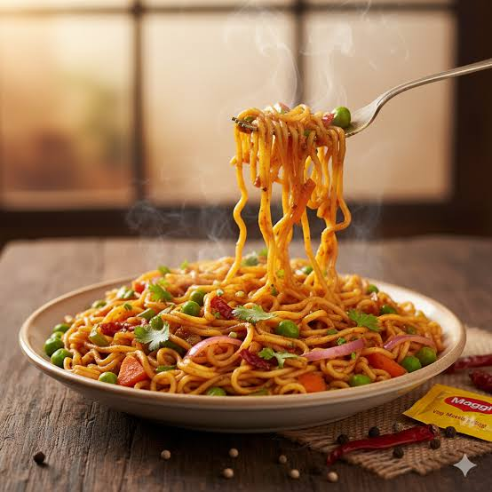

How to make Vegetable Maggie

Ingredients required
- Rai Seeds
- Oil
- Maggi noodles
- Red Chilli powder
- Black Chilli Powder
- Salt
- Garam Masala
- Capsicum
- Tomato
- Peas
Steps to follow
- Take a stainless steel kadhai pour some cooking oil put it on gas and let it get warm
- After few seconds add rai seeds on it
- Take some tomatoes and grind them to get thick liquidy texture and then put some peas and capsicum cutouts in it
- When the rai seeds noise go off put the gas on low and put the vegies paste and some water along in the kadhai
- After that put maggie noodles in it and let it sit for 45 seconds
- After that put all the spices 1 table spoon and salt according to taste
- Let the noodles cook and make sure that all the water dosent evaporate if it does put more water
- When it looks cooked pour it out in a bowl and it goes good with a slice of bread